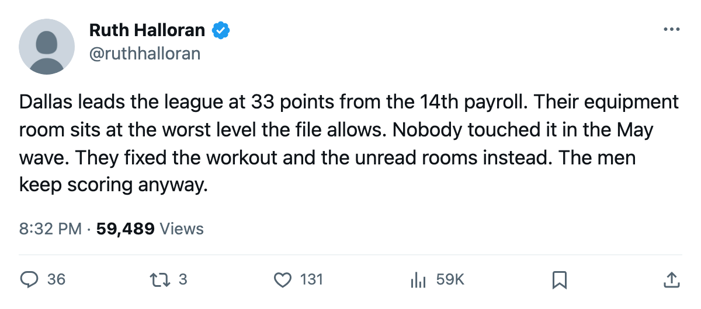

The Cheapest Hockey in the League: Dallas Is First in the West From a Building That Costs Its Men 6 Attribute Points a Night
The Stars spend $58.02M, collect 33 points, and run an equipment room at level zero while the three most expensive clubs in the league sit behind them on the table.
 Ruth HalloranBusiness of hockey · The Building
Ruth HalloranBusiness of hockey · The Building
 Dallas Stars leads the
Dallas Stars leads the  New York Rangers at 33 points, tops the Pacific with a 13-4-3 record, and returns 33 points on $58.02M of payroll. That is $1.76M a point, second only to
New York Rangers at 33 points, tops the Pacific with a 13-4-3 record, and returns 33 points on $58.02M of payroll. That is $1.76M a point, second only to  Pittsburgh Penguins at $1.75M. New York Rangers spends $92.95M for those same 33 points.
Pittsburgh Penguins at $1.75M. New York Rangers spends $92.95M for those same 33 points.  Toronto Maple Leafs spends $89.94M for 30.
Toronto Maple Leafs spends $89.94M for 30.  St. Louis Blues spends $69.76M for 29.
St. Louis Blues spends $69.76M for 29.
None of this comes from the building. Dallas runs the ninth-worst room stack in the league. Equipment sits at level 0, the lowest a club can hold without incurring a further penalty beyond the tuning table's own: the modifier is minus 6 on agility, acceleration, balance and shot accuracy, which touches more of a hockey player's game than the other three live tracks combined. Travel is level 1, minus 4 on every attribute on the road. Practice is level 2, minus 2 on every attribute at home. Workout moved to level 4 (+0) in May, which is the only room in this building that reads neither penalty nor bonus.
The live sum is minus 12. The facilities term averaged over the club's own men sits at minus 2.63 on the ice.
What they did upgrade tells you where Jeff Oliveira's money went. The May wave moved their workout from 3 to 4, their scouting from 2 to 3, and their locker room from 0 to 1. The workout upgrade was worth a point on strength, checking and endurance. The other two went into rooms that read nothing in this pipeline: the scouting room feeds a trade valuation nobody outside the club can see, and the locker room carries a morale curve in the tuning file that this build does not read.
Equipment, at the single worst level in the tuning table's active four, was left alone.
The gate, the money, and the men
The operation pays for itself. Revenue is $47.13M against a payroll of $58.02M, but attendance at 16,839 and a ticket at $82 put the club at $23.93M in season profit, 10th in the league. Oliveira is 11th in the league's prestige standing, up 4 points since the last edition, on a 13-4-3 record that ties the best in the league.
The men in the room are fine. Club average morale is 95.6, fifth-highest in the league, which is the number nobody outside the club can explain with a room that carries minus 12 across the tracks that move a rating.
The injury ledger says 15 spells across 56 days lost. The medical room is switched off in this build and does nothing to any of them. That is not a critique of Oliveira. It is a description of the shipped file.
The comparison nobody is making
New York is tied with Dallas at 33 points and spends $92.95M for the privilege. Their rooms read minus 14 on the live sum, worse than Dallas. Their per-point sits at $2.82M against Dallas's $1.76M.
Pittsburgh, at the league's best per-point, runs minus 12 rooms as well. The pattern across the top of the efficiency table is not good buildings producing wins. It is clubs finding players who perform anyway.
Dallas's equipment room at zero costs them 6 points on shot accuracy and agility every shift, home or away, until somebody at the front office moves it to level 1 and saves 2 of those 6. The travel room at level 1 costs them 4 points on every attribute on the road, until somebody buys a better charter or a closer hotel. Neither upgrade happened in the May wave.
The Stars are winning the league from a building that takes a bigger bite out of their men than the building belonging to any club in the top five of the standings except  New York Islanders and
New York Islanders and  Boston Bruins. The efficiency is real. The building is not the reason for it.
Boston Bruins. The efficiency is real. The building is not the reason for it.
